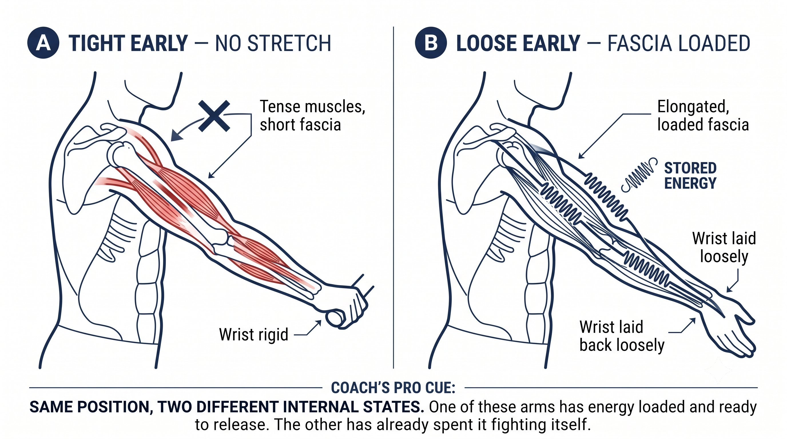
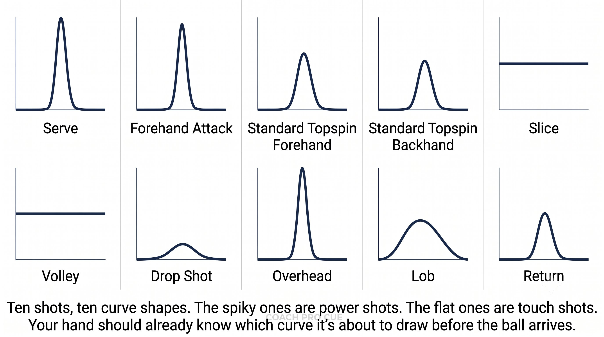

Chương 6: Hệ Truyền Đạt
(Bản dịch tiếng Việt của Chapter 6 trong Sổ Tay Quần Vợt Thống Nhất)
Gradient Độ Căng Cánh Tay (Lỏng → Chắc → Lỏng)
Năng lượng bạn đã nạp trong vung nạp vẫn phải đến được với trái bóng. Độ căng cơ chính là hệ truyền dẫn đó.
Một cánh tay căng cứng cảm giác mạnh mẽ nhưng lại đánh yếu. Một cánh tay thả lỏng cảm giác yếu nhưng lại đánh nặng. Khác biệt nằm ở thời điểm.
— Henry Phạm

Hình 6.1
Nghịch Lý Của Độ Căng Cơ
Hầu hết người chơi làm ngược hoàn toàn:
– Họ căng cứng quá sớm — trong lúc vung nạp và pha rơi — điều này giết chết chu kỳ căng-rút và chặn đứng phản hồi đàn hồi của fascia.
– Họ thả lỏng quá muộn — tại hoặc sau khi tiếp xúc — khiến mặt vợt rung lắc và năng lượng bị rò rỉ ra ngoài.
– Các tay vợt chuyên nghiệp làm ngược lại: thả lỏng sớm, chắc tay tại tiếp xúc, rồi thả lỏng ngay sau đó.
Nguyên Lý Cốt Lõi
Độ căng cơ không phải là nhị phân. Đó là một gradient, và nó phải đạt đỉnh đúng vào mili-giây tiếp xúc.
Dòng Thời Gian Của Gradient Độ Căng Cơ
Đây là cách gradient đó diễn ra qua một cú forehand topspin drive (cú backhand hai tay cũng đi theo mẫu tương tự):
Nguyên Lý Cốt Lõi
Đỉnh căng cơ kéo dài khoảng 30 mili-giây. Trước và sau đó, bạn ở mức 3/10. Tại tiếp xúc, bạn ở mức 6 đến 7/10. Đó là toàn bộ hệ truyền dẫn.
Vì Sao Căng Cứng Quá Sớm Giết Chết Công Suất
Khi bạn cầm chặt trong lúc vung nạp, một chuỗi hệ quả sẽ xảy ra:
– Các thoi cơ (muscle spindles) phát hiện sự căng giãn nhanh và kích hoạt phản xạ co cơ bảo vệ, khóa cứng cẳng tay và bắp tay.
– Các đường fascia không thể căng ra, nên không có năng lượng đàn hồi được lưu trữ, và không có phản hồi từ chu kỳ căng-rút để tận dụng.
– Cổ tay không thể ngả ra sau một cách thụ động, nên không có "cây roi" nào được nạp — bạn buộc phải dùng cơ bắp để vung tiến thay vào đó.
– Ngực và phần thân không thể truyền năng lượng qua một cánh tay cứng đờ, nên năng lượng bị rò rỉ ở vai và khuỷu tay.
– Kết quả: cảm giác như đang gắng sức, bóng không có trọng lượng, và cơn đau ở khuỷu tay hoặc vai thường xuất hiện sau đó.

Hình 6.2
Mẹo Huấn Luyện
Hãy thử điều này: thực hiện một cú vung không bóng với lực cầm 8/10 ngay từ đầu. Cảm nhận vai và khuỷu tay bị khóa cứng. Giờ thử lại với lực cầm 3/10, để cổ tay ngả tự do ra sau. Cảm nhận độ căng ở ngực và cẳng tay. Chính độ căng đó là năng lượng.
Vì Sao Thả Lỏng Quá Muộn Giết Chết Khả Năng Kiểm Soát
Khi bạn vẫn thả lỏng tại thời điểm tiếp xúc, một chuỗi hệ quả khác sẽ xảy ra:
– Góc mặt vợt rung lắc, khiến hướng phóng thay đổi thất thường và cả chiều sâu lẫn hướng đi đều không ổn định.
– Năng lượng không thể truyền từ cơ thể sang bóng, khiến cú tiếp xúc cảm giác "mềm" và thiếu sức xuyên.

Hình 6.3
– Rung động truyền lên cánh tay, gây sốc cho khuỷu tay và cổ tay, làm tăng nguy cơ chấn thương.
– Bóng "dính" trên dây quá lâu, tạo ra độ xoáy khó đoán.
– Kết quả: cảm giác thư giãn, nhưng bóng bay bồng bềnh, và đối thủ sẽ tấn công nó.
Nguyên Lý Cốt Lõi
3/10, lên 6/10 tại tiếp xúc, rồi trở lại 3/10. Sự chuyển đổi đó phải diễn ra tự động, không phải điều bạn cần suy nghĩ.
Hồ Sơ Độ Căng Cơ Theo Từng Loại Pha Bóng
Không phải pha bóng nào cũng dùng cùng một gradient.
Nguyên Lý Cốt Lõi
Các pha chạm bóng — slice, volley, drop shot — dùng độ chắc không đổi, không có đỉnh rõ rệt. Các pha tạo công suất dùng một gradient với đỉnh sắc nét.
Cách Huấn Luyện Gradient
Bạn không thể vừa vung vừa nghĩ "3 rồi 6 rồi 3". Nó phải được lập trình sẵn trong cơ thể trước khi bạn cần dùng đến nó một cách có ý thức:
1. Bài Tập Bóp - Thả: cầm ở mức 8/10, thả xuống 3/10, lại lên 8/10, rồi xuống 3/10. 20 lần. Huấn luyện khả năng kiểm soát lực cầm theo ý muốn.

Hình 6.4
2. Vẩy Khăn: cầm một đầu khăn và vẩy thật mạnh. Bạn không thể tạo ra tiếng vẩy với bàn tay cứng — chỉ có lỏng rồi chắc rồi lỏng mới làm được. Cảm nhận con sóng truyền qua chiếc khăn.
3. Tung - Bắt Bóng: tung một quả bóng lên và bắt nó bằng mặt vợt. Bạn phải lỏng tay để hấp thụ lực và chắc tay để giữ bóng lại. 20 lần.
4. Shadow Gradient: thực hiện cú vung không bóng ở tốc độ chậm. Nói to "lỏng... lỏng... chắc... lỏng" ở mỗi pha. 50 lần cho đến khi nó trở nên tự động.
5. Drill Tường — Cảm Nhận Đỉnh: đánh bóng vào tường, chỉ tập trung cảm nhận khoảnh khắc chắc tay kéo dài 30 mili-giây đó. Bỏ qua cả cú vung, chỉ tìm đỉnh đó thôi.
6. Drill Hai Bóng: nhờ huấn luyện viên hoặc đối tác bắn liên tiếp hai quả bóng thật nhanh. Quả đầu tiên, gradient của bạn chạy tự động. Quả thứ hai, không còn thời gian để nghĩ nữa — đây chính là bài kiểm tra xem nó đã thực sự "thấm" vào cơ thể bạn hay chưa.
Mẹo Huấn Luyện
Nếu cẳng tay bạn nóng rát sau buổi tập, bạn đang căng cứng quá sớm. Nếu khuỷu tay đau, bạn đang thả lỏng tại tiếp xúc. Trạng thái khỏe mạnh là chỉ chắc tay đúng vào khoảnh khắc tiếp xúc đó thôi.
Độ Căng Cơ và Các Đường Fascia
Gradient độ căng cơ không chỉ là chuyện của cơ bắp — đó là tính liên tục của fascia chạy dọc theo các đường kết nối trong cơ thể:
– Spiral Line (Forehand Push): từ vòm bàn chân, qua cơ khép đùi trong, cơ chéo bụng, ngực, và ra đến lòng bàn tay. Độ căng phải chảy suốt cả đường — một bờ vai cứng sẽ làm gãy đường này.
– Back Line cộng Arm Line (backhand một tay kiểu "saber"): từ gót chân, qua gân kheo, cơ mông, cơ lưng xô (lat), cơ tam đầu, và ra đến cạnh ngón út của bàn tay. Độ căng cũng phải chảy suốt — một cổ tay cứng sẽ làm gãy đường này.
– Gradient chính là thứ cho phép đường căng này giãn ra (khi lỏng) rồi bật lại (khi chắc) mà không làm gãy tính liên tục.

Hình 6.5
– Căng cứng liên tục nghĩa là đường đó đã bị rút ngắn sẵn — không còn độ giãn, không còn phản hồi.
Quy Tắc
Gradient độ căng cơ chính là việc nạp và phóng của các đường fascia. Làm gãy gradient, bạn làm gãy cả đường fascia.
Danh Sách Kiểm Tra Độ Căng Cơ
3/10 suốt vung nạp → 6/10 tại tiếp xúc (30 mili-giây) → trở lại 3/10 ngay lập tức. Lỏng sớm, đạt đỉnh tại va chạm, lỏng lại sau đó.
LỎNG ĐỂ NẠP. CHẮC ĐỂ TRUYỀN. LỎNG ĐỂ PHÓNG.
Những Điều Cần Nhớ
– Vung nạp: 3/10, cổ tay thụ động, cảm nhận độ căng ở ngực và cơ lưng xô.
– Vung tiến: vẫn giữ 3/10 cho đến khoảng 5cm trước khi tiếp xúc.
– Tiếp xúc: bật lên 6–7/10 trong đúng 30 mili-giây — lòng bàn tay đẩy, hoặc cạnh vợt cắt.
– Sau tiếp xúc: thả ngay lập tức về 3/10 — để vợt cuốn qua tự do.
– Cẳng tay nóng rát nghĩa là bạn căng cứng quá sớm; đau khuỷu tay nghĩa là bạn thả lỏng tại tiếp xúc.
– Slice và volley dùng độ chắc không đổi ở mức 4–5/10, không có đỉnh; các pha tạo công suất dùng gradient có đỉnh sắc nét.
– Luyện tập bằng: vẩy khăn, bóp-thả, shadow gradient, và drill tường tập trung vào đỉnh.
Chương Này Dẫn Đến Đâu
Chương này thiết lập biến số truyền dẫn năng lượng — chữ E trong hệ thống Q-V-ROOT-8-45-Impulse. Chương 7 sẽ tích hợp Sân cộng Bóng thành Góc Mặt Bắt Buộc, rồi Cầm Vợt cộng Điểm Tiếp Xúc cộng Vung Nạp cộng Độ Căng Cơ, vào trọn vòng lặp quyết định CORE.